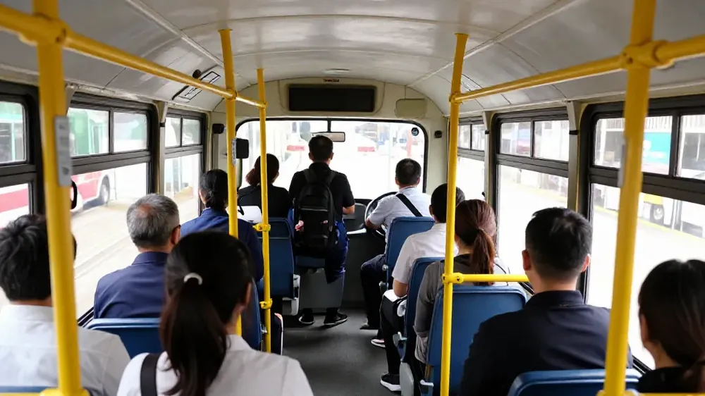
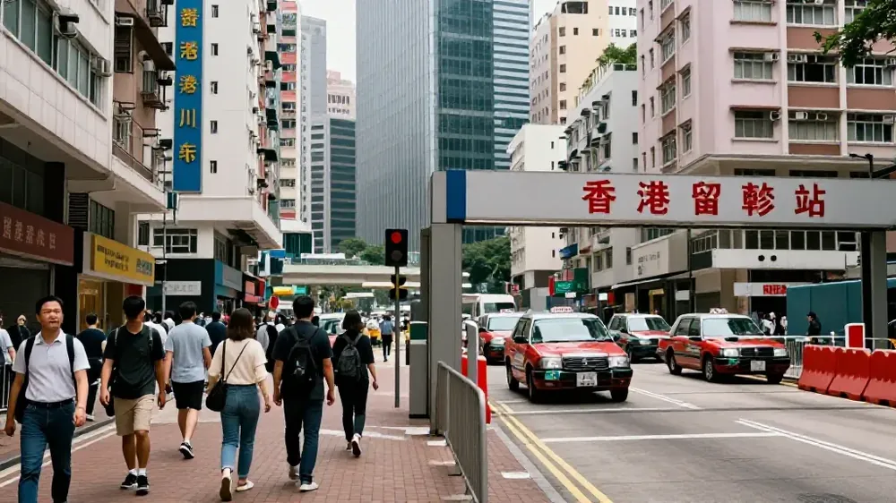
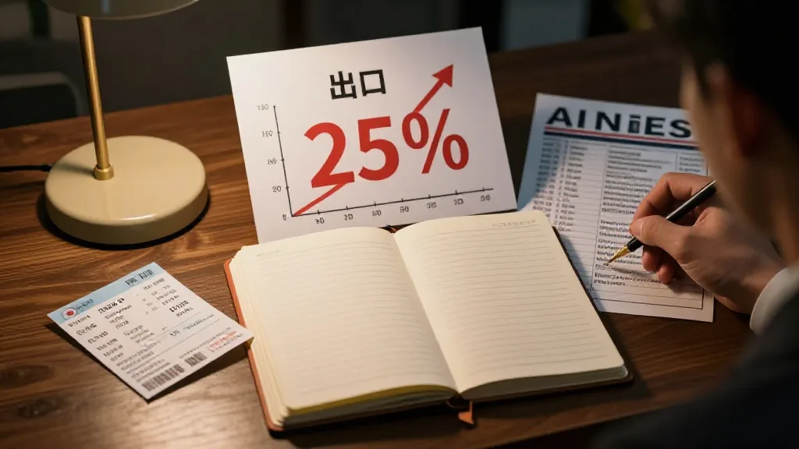

2026年9月15日，星期二。呢日有两件事，看似毫无关系，但喺我脑里却撞出火花。
第一件事：我经过九龙太子道，见到一架城巴6333停喺巴士站。第二件事：中国出入境新规今日正式生效。
一件系香港嘅日常，一件系国家政策。表面上完全冇关系，但仔细谂——两件事都讲紧同一件事：「人嘅流动」。
一、城巴6333嘅工作：每日接驳点同点
城巴6333嘅工作，就系喺太子道接驳乘客。由A点接人，送到B点放人，然后返转头接下一批。每程30分钟，每日来回20程，每程平均50人，一日就系1000人嘅流动。
呢种流动看似简单，实际系香港命脉：打工仔靠佢返工，学生靠佢上课，医生靠佢去医院，商人靠佢去见客。如果冇咗城巴，香港就停摆。城巴嘅本质就系降低人嘅流动成本。

圖片由 AI輔助創作（Z-Image-Turbo）
二、出入境新规嘅工作：今日起限制人嘅流动
9月15日开始，中国实施新嘅出入境规定。表面话系打击跨境赌博、电信诈骗、技术非法外移，但实际上包括首次明文规定相关出境限制，国安人员可以直接限制特定人士出境，出境中介机构需要备案管理。
呢种流动限制，同城巴嘅流动促进完全相反。一个促进自由流动，一个限制自由流动。
三、2026年中国出口暴涨25%，但人却出唔去
8月中国出口美元计价按年增长25%，创近年新高。但同时，大量技术人才、专业人士出境受限。货物可以自由流动，但人唔可以，呢个矛盾就系2026年最核心嘅paradox。
圖片由 AI輔助創作（Z-Image-Turbo）
四、70后做贸易嘅经验：人永远最重要
我1998年开始做电子消费品出口，2010年后做跨境电商。26年经验话我知：货嘅流动背后，永远系人嘅流动。深圳运去全世界一日搞掂，但背后系香港采购经理去验厂、美国客户飞嚟睇货、德国工程师嚟调试、印度软件商对接。
如果人嘅流动被限制，货嘅流动就会减慢。新规真正影响唔系限制几个人，而系减慢成个国际化速度。

圖片由 AI輔助創作（Z-Image-Turbo）
五、两种唔同嘅治理哲学
香港城巴系降低门槛、鼓励流动、信任市民、服务导向；新规系提高门槛、限制流动、控制导向。两种哲学就系两种治理模式缩影。我哋见证过：鼓励流动嘅地方经济发达，限制流动嘅地方经济停滞，呢个规律过去三十年从未失败。
六、技术嘅流动都系双刃剑
同一日Anthropic警告有人用AI研发武器同病毒。AI、芯片、出入境流动可以帮人都可以害人。所有流动都要平衡：促进有价值嘅贸易教育科技交流，限制有害嘅武器病毒间谍，关键系点样分辨，而唔系一刀切。城巴唔会拒绝乘客，因为搭车本身就系有益流动。

圖片由 AI輔助創作（Z-Image-Turbo）
七、应该点睇呢件事？
我成日同后生讲：唔好睇政策表面，要睇政策对人嘅影响。真实成本系家庭分离、事业受阻、贸易受阻、回国困难，冇一个GDP数字可以衡量。
一个城市嘅伟大，唔系有几多限制，而系有几多自由。一个国家嘅强大，唔系控制几多人，而系畀几多人自由流动。一代人嘅价值，唔系有几多规限，而系打破几多规限。城巴6333每日走嘅路，就系我哋应该走嘅路：促进流动，而非限制流动。
八、9月15日嘅日记
呢日我见到城巴6333接驳乘客，出入境新规生效，中国8月出口增长25%，Anthropic警告AI武器化。四件事表面冇关系，但都指向同一个问题：流动嘅自由同控制。我哋见过控制嘅失败同流动嘅成功，未来30年胜负关键就系流动。
三句话：人嘅流动系一切繁荣基础，流动就系机会；门槛要低、把关要严，唔系一刀切；编号唔系终点系起点，你嘅编号就系对社会嘅承诺。
2026年9月15日，太子道城巴6333继续接驳乘客，出入境新规开始限制流动。一个城市嘅命运，就喺呢两个画面入面。城巴6333，多谢今日呢一课。
Tuesday, 15 September 2026. Two things happened that day that look completely unrelated, yet in my head they threw sparks off each other.
The first thing: I was walking along Prince Edward Road in Kowloon and saw Citybus 6333 parked at a bus stop. The second thing: China's new exit and entry rules took effect today.
One is an everyday scene in Hong Kong, the other is national policy. On the surface they have nothing to do with each other, but think about it — both are talking about the same thing: the movement of people.
1. The job of Citybus 6333: connecting point to point every day
The job of Citybus 6333 is picking up passengers along Prince Edward Road. Pick people up at point A, drop them at point B, then turn around and pick up the next batch. Thirty minutes a trip, twenty trips a day, about fifty people a trip — that is a thousand people moving every day.
This kind of movement looks simple, but it is actually Hong Kong's lifeline: office workers rely on it to get to work, students rely on it to get to class, doctors rely on it to get to the hospital, businessmen rely on it to go and see clients. Without the buses, Hong Kong would stop. The essence of a bus service is lowering the cost of human movement.
Image created with AI assistance (Z-Image-Turbo)
2. The job of the new exit rules: restricting the movement of people from today
From 15 September, China implemented new exit and entry rules. Officially they are aimed at cross-border gambling, telecom fraud and the illegal transfer of technology abroad, but in practice they include the first explicit written provisions on exit restrictions: national security officers can directly bar specific individuals from leaving the country, and exit agencies must be registered and managed.
This restriction of movement is the exact opposite of what the bus does. One promotes free movement, the other restricts it.
3. China's exports jumped 25% in 2026, but people cannot get out
In August, China's exports in US dollar terms grew 25% year on year, a recent high. But at the same time, large numbers of technical talent and professionals face restrictions on leaving the country. Goods can move freely, people cannot — that contradiction is the core paradox of 2026.
Image created with AI assistance (Z-Image-Turbo)
4. What 26 years in trade taught me: people always matter most
I started exporting consumer electronics in 1998 and moved into cross-border e-commerce after 2010. Twenty-six years of experience tell me one thing: behind the movement of goods there is always the movement of people. Shipping from Shenzhen to anywhere in the world takes a day, but behind that a Hong Kong sourcing manager flies out to inspect the factory, an American client flies in to look at the goods, a German engineer comes to calibrate the equipment, an Indian software vendor connects with the team.
If the movement of people is restricted, the movement of goods slows down. What the new rules really affect is not a handful of individuals but the whole pace of internationalisation.
Image created with AI assistance (Z-Image-Turbo)
5. Two different philosophies of governance
Hong Kong's bus service lowers the barrier, encourages movement, trusts the public and is service-oriented; the new rules raise the barrier, restrict movement and are control-oriented. The two philosophies are a miniature of two models of governance. We have seen it before: places that encourage movement have rich economies, places that restrict movement have stagnant ones, and that rule has not failed once in the past thirty years.
6. The flow of technology is a double-edged sword too
On the same day, Anthropic warned that someone was using AI to develop weapons and viruses. AI, chips, exit and entry — movement can help people and it can harm them. All movement needs balance: encourage valuable trade, education and technological exchange, restrict harmful weapons, viruses and espionage. The key is how to tell them apart, not to cut everything with one knife. A bus does not refuse passengers, because riding a bus is itself a beneficial kind of movement.
Image created with AI assistance (Z-Image-Turbo)
7. So how should we look at this?
I tell young people all the time: do not look at the surface of a policy, look at what it does to people. The real cost is separated families, stalled careers, blocked trade, difficulty coming home — and no GDP figure can measure any of that.
The greatness of a city is not how many restrictions it has, but how much freedom. The strength of a country is not how many people it controls, but how many it lets move freely. The value of a generation is not how many limits it obeys, but how many it breaks. The road Citybus 6333 runs every day is the road we should be on: promote movement, do not restrict it.
8. Diary for 15 September
That day I saw Citybus 6333 ferrying passengers, the new exit and entry rules took effect, China's August exports grew 25%, and Anthropic warned about AI being weaponised. Four unrelated-looking things, all pointing at the same question: freedom of movement versus control. We have seen control fail and movement succeed, and the key to who wins over the next 30 years is movement.
Three sentences: the movement of people is the foundation of all prosperity, and movement means opportunity; keep the threshold low and the gatekeeping strict, not one-size-fits-all; a number is not the end point but the starting point, and your number is your promise to society.
On 15 September 2026, Citybus 6333 keeps ferrying passengers along Prince Edward Road while the new exit and entry rules begin restricting movement. The fate of a city sits inside those two images. Citybus 6333, thank you for today's lesson.